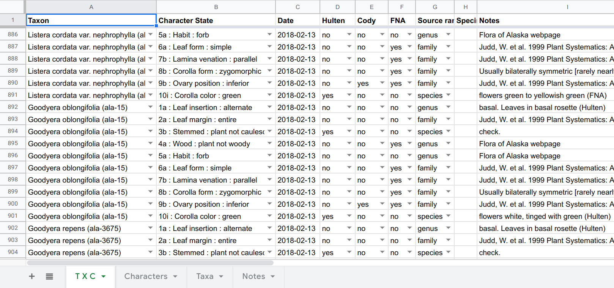
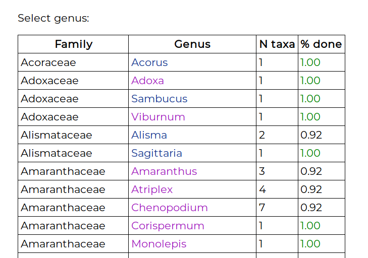
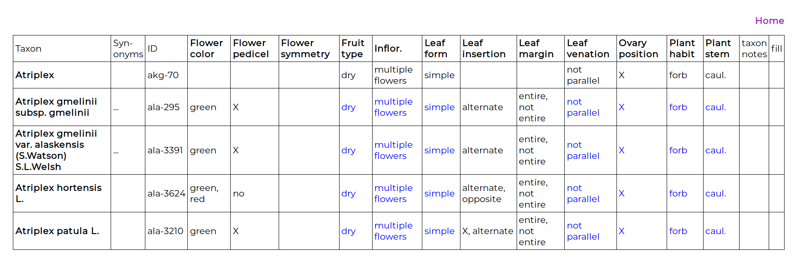
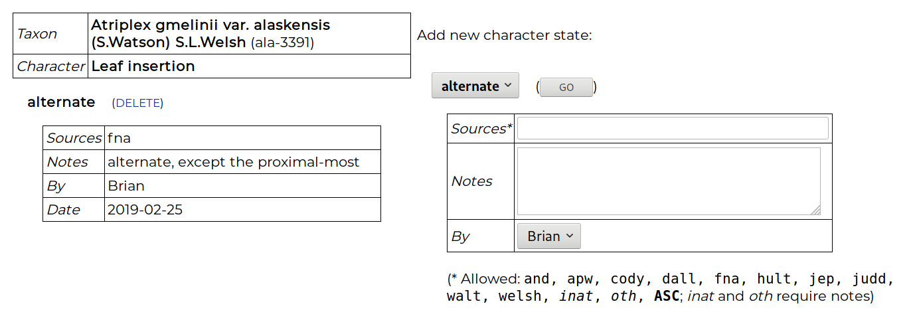

Blog 6: A tool for phenotype data entry
Posted by Cam on 2019-03-14
A shorter post now, following on from last week’s post on phenotype standardization. It’s all well and good to theorize about Taxon × Character (T × C) matrices, but until the data are created we don’t have anything to actually work with or share. I mentioned in that post our current project to create and integrate data for 12 characters for all the Alaskan plant taxa (ca. 2,300). We’ve recently been joined by Brian Heitz, a botanist with long Alaska experience, who has begun to collect these data, combing through a wide array of written and digital sources.
The question immediately arose, “How best to enter these data into a data management system?” If all we wanted was the single phenotype datum for each T × C combination, the cells in a spreadsheet might have sufficed (with all the usual caveats about using a spreadsheet as a database). But for each phenotype we also want to record metadata: date entered, entered by who, sources, and any comments on the scoring, e.g. about uncertainty. Without having large, hard-to-parse cell values, a single spreadsheet table will not work.
The first, quick-fix solution was to use a spreadsheet where each row was the character data and metadata for each T × C combination. Using the “Data validation” capabilities of Google Sheets, one can create a drop-down menu containing all the taxa in the first cell of a row, and a dropdown menu containing all the characters and states in the second (by referring to ranges in other sheets). The combination of these two is the main T × C datum, and the remaining cells in a row contain metadata:

This is a perfectly workable solution, and the main table can be dumped to CSV and easily parsed prior to entry into a database, and Brian used this for several weeks. However, this spreadsheet user experience is quite time-consuming (e.g., scrolling through all the dropdown taxa each time a line is created), somewhat error-prone, and it’s hard to monitor ones progress and the percentage completeness of a genus. So I set about writing a data-entry app just for this project. It’s been fun tuning the “UI” and “UX” via frequent feedback from Brian. Not an experience I’ve had before, despite making a bunch of web-apps, most being developed under the unrealistic hope that “if I make it, someone will use it”!
The product is working well, and might be of some use to others, so I’ll describe it briefly here. The app is a single Awk file (plus 3 function libraries and a MySQL DB; schema here), running as a CGI script on a web server (optionally password protected via .htpasswd).
The landing page displays a list of genera, showing the number of species and infraspecific taxa:

The “% done” column is the completed-ness of that genus, which is the percentage of filled-in cells in the genus T × C matrix. Clicking on the genus name takes you to the matrix view:

The first entry is the genus. For the species of some genera a character may have an unvarying state, and entering the state once, at the genus level, will greatly increase the rate of data entry. When a character state is entered at this genus level, that state appears in blue for all the taxa in the genus. The precise definition of this is important: entering a character state at the genus level only implies that for all the included taxa in this list (i.e., in Alaska) the state is believed to to be unvarying. It is not implying that the phenotype is an apomorphy for the genus clade.
Below the genus are the included taxa, and data can be entered for any T × C combination, even if the character has been scored at the genus level. Clicking on the “taxon notes” cell enables a note to be made about the taxon. Clicking on the “fill” cell enables the character data for one taxon to be copied to another. To enter data in a cell, the cell is clicked on and the data-entry page appears:

A character state is chosen, along with metadata: one or more source codes (e.g., hult = Hultén, judd = Judd et al., inat = iNaturalist), and notes. When entering data for a genus, a source can be entered that supports the state being consistent for all included taxa, or the code ASC can be used that means “all species checked”. Polymorphisms are allowed, i.e., two or more states for a character. This implies that either different individuals in a taxon may show variation for this character, or that individuals often show two or more states (e.g., apparently entire and non-entire leave margins, or blue and purple flowers). Such a polymorphism statement may also appear at the genus level, implying all taxa show this variation. Additionally, an X state can be score for any character, which allows a comment to be made for the T × C cell without yet committing to a choice of character state.
The choice of the combination of character and character state creates a statement about the phenotype of a taxon, as per the previous blog. Note that the options are presented to the user in the standard DELTA fashion of Character + Character state not Entity + Quality, the former being, I think, the more natural way of speaking of a phenotype. However, each of the available phenotypes in this app is one of the phenotypes included in the ontology, in which most of the phenotypes are mapped to their “EQ” representation.
The task of scoring these characters for all our taxa is a large one, but Brian is off to a great start, and says he finds this data entry and editing tool to be useful and quick.